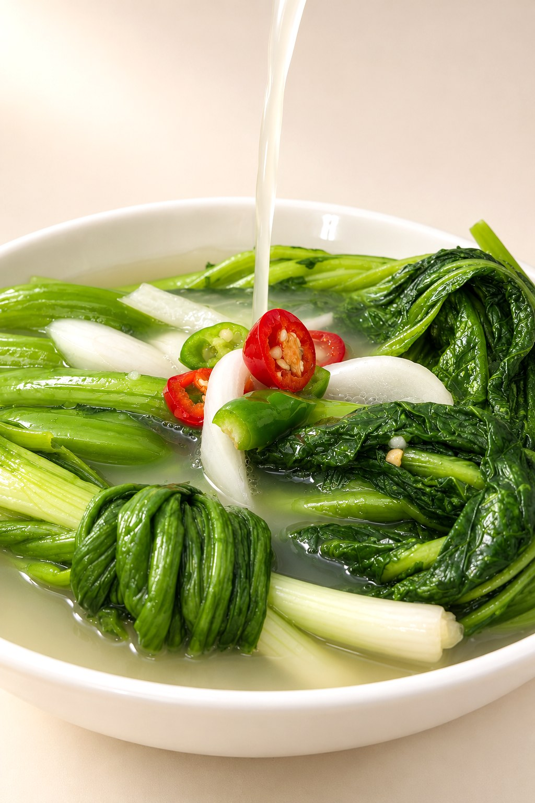
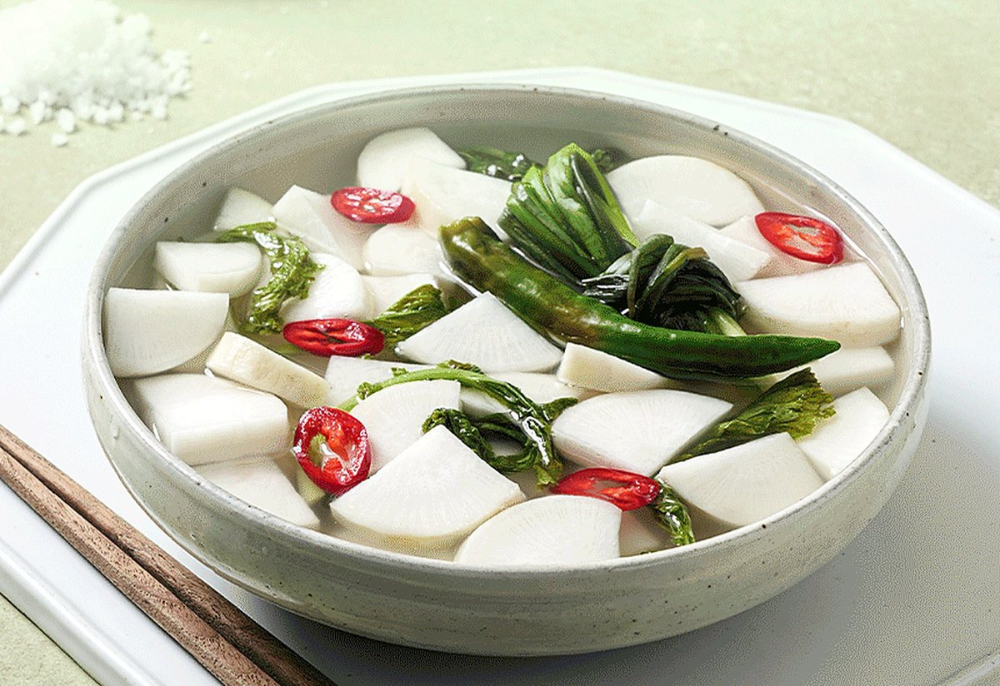

그리운밥상 새 김치 소식

그리운밥상 갓물김치 · 출시 예정
그리운밥상 갓물김치 · 출시 예정 그리운밥상 갓물김치 · 출시 예정
그리운밥상 갓물김치 · 출시 예정쌉싸름하고 알싸한 향이 나는 갓을 한 줄기씩 매듭지어, 무와 함께 맑은 국물에 담가요. 고춧가루 없이 하얗게, 갓의 향과 국물의 시원함이 주인공인 물김치예요.

그리운밥상 동치미그리운밥상 동치미에도 갓이 들어가요. 국물에 은은한 향을 더하던 갓을 이번엔 듬뿍, 갓물김치로 준비하고 있어요. 출시 소식은 가장 먼저 여기서 알려 드릴게요.
그리운밥상 갓물김치 · 출시 예정